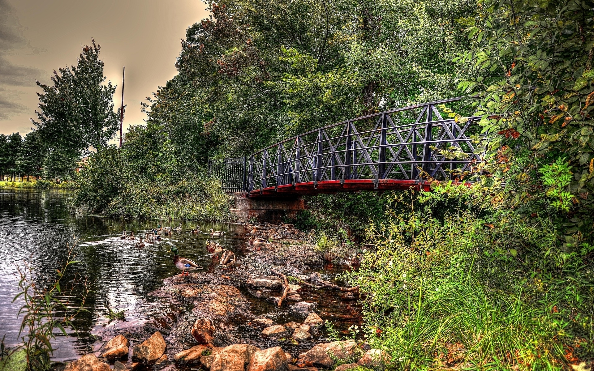

Welcome to pod
Copac - Casa si gradina - OLX.ro
2020.10.01 20:45Anunturi pe OLX.ro Adauga anunt nou Contul meu Vizualizeaza: Lista Galerie Moneda: lei € Toate 240 Privat 175 Firma 65 Toate anunturile
ANUNTURI CASA SI GRADINA - copac
Mobila - Decoratiuni 97 Gradina 114 Mobila - Decoratiuni 97 Gradina 114 Materiale constructii si amenajari 16 Termice - Electrice - Sanitare 4 Materiale constructii si amenajari 16 Termice - Electrice - Sanitare 4 Unelte - Scule - Feronerie 8 Unelte - Scule - Feronerie 8 Articole menaj 1 Articole menaj 1Anunturi promovate Vezi toate
plantator, masina plantat rasaduri copaci 2,3,randuri
Gradina » Plante si seminte
969 €
Pascani 23 sep
Anunturi
Am gasit 240 de anunturi
Am gasit 240 de anunturi
Vinde rapid. Promoveaza-ti anuntul aici
copac ginkgo biloba
Gradina » Plante si seminte
3 lei
NegociabilCluj-Napoca Azi 21:15
Livrare cu verificare Vanzatorul ofera LIVRARE CU VERIFICARE. Astfel, poti deschide coletul si verifica produsul inainte sa platesti.
Afla cum Biblioteca stil copac - comenzi
Mobila - Decoratiuni » Sufragerie
700 lei
Navodari Azi 20:55
Casute de joaca pt copii in copaci
Gradina » Mobilier gradina
190 €
Iasi Azi 19:15
Tablou copacul vieții licheni
Mobila - Decoratiuni » Decoratiuni
160 lei
Brasov Azi 17:25
Livrare cu verificare Vanzatorul ofera LIVRARE CU VERIFICARE. Astfel, poti deschide coletul si verifica produsul inainte sa platesti.
Afla cum Tablou natural din licheni, scoarta de copac si bambus
Mobila - Decoratiuni » Decoratiuni
200 lei
Floresti Azi 16:11
Izolator pentru usa sau geamuri tip trunchi de copac, 90x10 cm
Materiale constructii si amenajari » Usi, ferestre, tamplarie
40 lei
Pitesti Azi 11:14
Copacul Vietii
Gradina » Plante si seminte
100 lei
Brasov Azi 09:50
Toaletare copaci
Gradina » Plante si seminte
50 lei
Bucuresti, Sectorul 6 Ieri 23:29
trunchi copac = cires, inca nescos din radacina, vezi foto, 1.277 lei
Gradina » Plante si seminte
1 277 lei
NegociabilBucuresti, Sectorul 1 Ieri 20:04
casute in copac sau cabane sau case lemn
Gradina » Unelte gradinarit - accesorii
200 €
Baita Ieri 19:44
Copacul vietii, licheni 30x40
Mobila - Decoratiuni » Decoratiuni
100 lei
Bucuresti, Sectorul 6 Ieri 15:14
Vand copaci/arbori ornamentali de Paulownia
Gradina » Plante si seminte
50 €
Braila Ieri 13:24
Tablou vegetal “copac inflorit” 33 x 27 cm
Mobila - Decoratiuni » Decoratiuni
180 lei
Timisoara Ieri 11:25
Livrare cu verificare Vanzatorul ofera LIVRARE CU VERIFICARE. Astfel, poti deschide coletul si verifica produsul inainte sa platesti.
Afla cum Cosit / defrisat /toaletare pomi / copaci/gard viu/gazon/iarba SICAP
Materiale constructii si amenajari » Alte materiale
50 lei
Brasov Ieri 08:39
Livrare cu verificare Vanzatorul ofera LIVRARE CU VERIFICARE. Astfel, poti deschide coletul si verifica produsul inainte sa platesti.
Afla cum masina tuns copaci,crengi si iarba 4.1
Unelte - Scule - Feronerie » Unelte si piese
999 lei
Zalau Ieri 08:18
Livrare cu verificare Vanzatorul ofera LIVRARE CU VERIFICARE. Astfel, poti deschide coletul si verifica produsul inainte sa platesti.
Afla cum Decoratiuni din licheni. Copac din licheni stabilizati
Mobila - Decoratiuni » Decoratiuni
55 lei
Brasov 29 sep
Suport copac
Mobila - Decoratiuni » Decoratiuni
1 000 lei
Craiova 29 sep
Livrare cu verificare Vanzatorul ofera LIVRARE CU VERIFICARE. Astfel, poti deschide coletul si verifica produsul inainte sa platesti.
Afla cum Copac cu 48 LED-uri violet, Hoff, 45 cm, alimentare priza
Mobila - Decoratiuni » Decoratiuni
100 lei
Berceni 29 sep
Crassula ovata / arborele de jad / copacul cu bani
Gradina » Plante si seminte
20 lei
Bucuresti, Sectorul 4 29 sep
Copacul vieții din metal
Mobila - Decoratiuni » Decoratiuni
120 lei
Brasov 29 sep
Cadouri inedite copaci cu licheni Premium
Mobila - Decoratiuni » Decoratiuni
100 lei
Targu-Mures 29 sep
Vand circular
Unelte - Scule - Feronerie » Unelte si piese
800 lei
Copacioasa 28 sep
Taieri de lemne si toaletari de copaci
Gradina » Alte materiale pentru gradina
100 lei
NegociabilRoman 28 sep
Livrare cu verificare Vanzatorul ofera LIVRARE CU VERIFICARE. Astfel, poti deschide coletul si verifica produsul inainte sa platesti.
Afla cum Avem puieti de evodia ( copacul de miere )
Gradina » Plante si seminte
3 lei
Suceava 28 sep
Puieti de Evodia ( Copacul de miere )
Gradina » Plante si seminte
3 lei
Roman 28 sep
Livrare cu verificare Vanzatorul ofera LIVRARE CU VERIFICARE. Astfel, poti deschide coletul si verifica produsul inainte sa platesti.
Afla cum Stiker Autocolant- Copacul Familiei cu cadre foto
Mobila - Decoratiuni » Decoratiuni
49,90 lei
Bucuresti, Sectorul 1 28 sep
Tablou copac decor licheni decoratie
Mobila - Decoratiuni » Decoratiuni
10 lei
Oradea 28 sep
Defrisam și tundem copaci în curți grădini livezi etc
Gradina » Plante si seminte
10 lei
Sibiu 28 sep
Masa de cafea trunchi copac
Mobila - Decoratiuni » Sufragerie
800 lei
Ploiesti 28 sep
Arbore de jad (copacul banilor) ideal pentru un cadou de neuitat.
Gradina » Plante si seminte
100 lei
Brasov 28 sep
Cupola de sticla ,,Casuta din copac”.
Mobila - Decoratiuni » Decoratiuni
300 lei
Bucuresti, Sectorul 2 28 sep
Livrare cu verificare Vanzatorul ofera LIVRARE CU VERIFICARE. Astfel, poti deschide coletul si verifica produsul inainte sa platesti.
Afla cum Butasi Paulownia sau copaci intregi
Gradina » Plante si seminte
5 lei
Craiova 27 sep
Fara fotografii
scara de lemn clasica pt urcat in pod, copaci etc
Gradina » Plante si seminte
80 lei
Campulung 27 sep
Livrare cu verificare Vanzatorul ofera LIVRARE CU VERIFICARE. Astfel, poti deschide coletul si verifica produsul inainte sa platesti.
Afla cum Copac,copaci decorativi albi decor,evenimente 50cm/80cm/120cm
Mobila - Decoratiuni » Decoratiuni
80 lei
Bucuresti, Sectorul 2 27 sep
Livrare cu verificare Vanzatorul ofera LIVRARE CU VERIFICARE. Astfel, poti deschide coletul si verifica produsul inainte sa platesti.
Afla cum Suport ghivece decorative/ lemn,scoarta copac naturala/diverse modele
Mobila - Decoratiuni » Decoratiuni
30 lei
Voluntari 27 sep
Livrare cu verificare Vanzatorul ofera LIVRARE CU VERIFICARE. Astfel, poti deschide coletul si verifica produsul inainte sa platesti.
Afla cum Copac decorativ!! ( Robinia hispida) Salcam rosu/roz
Gradina » Plante si seminte
3 lei
Arad 27 sep
Livrare cu verificare Vanzatorul ofera LIVRARE CU VERIFICARE. Astfel, poti deschide coletul si verifica produsul inainte sa platesti.
Afla cum Decoratiune de perete Copacul Vietii
Mobila - Decoratiuni » Decoratiuni
90 lei
Iasi 27 sep
Copac cu licheni și mesaje motivationale
Mobila - Decoratiuni » Decoratiuni
100 lei
Brasov 27 sep
Masa lemn masiv, trunchi de copac sculptat!
Gradina » Mobilier gradina
645 lei
Bucuresti, Sectorul 2 26 sep
Anunturi anterioare 1 2 3 4 5 6 7 Urmatoarele anunturi
Cautari asemanatoare:
copaci in categoria Plante si seminte copaci in categoria Gradina copaci ornamentali in categoria Plante si seminte copaci ornamentali in categoria Gradina copaci in categoria Seminte-plante gradina copaceni ilfov in categoria Imobiliare copaci ornamentali in categoria Casa si gradina copaci ornamentali in categoria Seminte-plante gradina copaceni in categoria Imobiliare copac in categoria Plante si seminte Doresti sa salvezi aceste criterii de cautare? Salveaza cautarea Vezi cautarile salvate Cautarea este salvata Sterge din cautari favorite Vezi cautarile salvate aBi+OMZ/rDETrvY2SlLVLnI4aqzvsBi7HBb2Web4U9/OfDlPUXwX/Sd7HdYhXCXjG6AEj6zD9zfX6FUuXG1MM0CKRL4zCV551q0dwOeKKmqHW1I3TtMVBDvDkbTTe5dYBSt6xEJ7EEeLtrBNbHaKPf06aDVa3nG7PG4JxSd7JfvRRx0bZyL9+K1Fqrwco7TJjcmytBxMnAYh8jA3le2wPfO2/xBFWvmMXcTXMIcL7fd11rtVROqH/rRZTcoMMDVjYuuHAhoeaE0= 933ec91a477da6f179b1da4850433fbf Vazute recent Anunturi favorite ( 0 ) Cautari favorite ( 0 )Anuntul acesta nu mai este disponibil. Cum cel mai probabil produsul a fost deja vandut, sa ne bucuram o clipa pentru vanzator. Si acum te invitam sa reiei cautarea.
Poti gasi anunturi similare din aceeasi categorie.
Categoriile principale Categoriile de anunturi din "Casa si gradina"Categoriile principale :
Auto, moto si ambarcatiuni , Imobiliare , Locuri de munca , Electronice si electrocasnice , Moda si frumusete , Casa si gradina , Mama si copilul , Sport, timp liber, arta , Animale de companie , Agro si industrie , Servicii, afaceri, echipamente firmeCategoriile de anunturi din "Casa si gradina" :
Mobila - Decoratiuni , Gradina , Materiale constructii si amenajari , Termice - Electrice - Sanitare , Unelte - Scule - Feronerie , Articole menaj Romania Bucuresti - Ilfov (90) Iasi (10) Bihor (5) Dambovita (4) Satu Mare (2) Buzau (2) Vaslui (1) Cluj (16) Prahova (8) Bacau (4) Botosani (3) Maramures (2) Braila (2) Valcea (1) Brasov (16) Arges (7) Dolj (4) Salaj (3) Mures (2) Harghita (1) Giurgiu (1) Gorj (13) Arad (6) Suceava (4) Galati (2) Neamt (2) Caras-Severin (1) Olt (1) Timis (12) Constanta (6) Mehedinti (4) Sibiu (2) Alba (2) Hunedoara (1)Toate...
Accesorii pentru casa si gradina. Mobila, decoratiuni interioare, sisteme de iluminat, instalatii sanitare, materiale de constructii.
Ajutor si contact Cautari frecvente în Casa si gradina Conditii de utilizare Politica de confidentialitate Harta site Harta judetelor Cariere in OLX ANPC Parteneri Aplicatii mobile Cum functioneaza OLX pentru afacerea ta Livrare cu verificare Promovarea anunturilor Blog OLX Sfaturi de siguranta How to OLX Publicitate pe OLX Bun de angajat Incotro in RO Urmareste-ne pe Descarca aplicatia pentru telefon din OLX.bg OLX.pl OLX.ua Autovit.ro Storia.ro
Cautarea a fost salvata
Bravo. Anuntul este acum salvat in in lista ta de favorite
Important si util: Pentru a salva permanent anuntul trebuie sa fii logat in contul tau OLX.
Intra in cont
sau Creeaza cont
Nu, multumesc
Salveaza ca favorit
Nu, multumesc
OLX.ro AppStore OLX.ro GooglePlay OLX.ro WindowsStore Cauti un loc de munca? Gaseste-l aici in peste 45.000 oferte de pe OLXSeteaza o parola pentru contul tau
Care sunt beneficiile unui cont pe OLX?
Poti adauga anunturi rapid, fara confirmare pe email, Poti accesa usor contul si anunturile tale oricand, Poti modifica rapid setarile contului sau anunturilor tale Continua cu contul Facebook Seteaza parolaBeneficiile crearii unui cont pe OLX:
Poti trimite rapid mesaje catre orice anunt Ai toate conversatiile salvate intr-un singur loc Ai acces la toate functiile contului OLX Intra in cont Creeaza un contPrin accesarea contului, esti de acord cu Termenii si Conditiile site-ului
